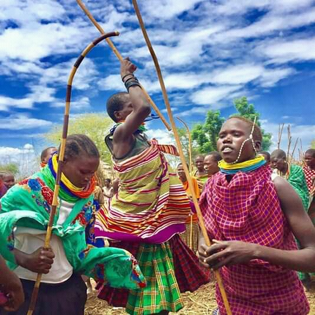

Turkana Tribe
Northwest Kenya
The Turkana County is situtated in the northern part of Kenya. Being an arid region, it has hot and dry climate with the main economic activity being nomadic pastoralism. However, this activity is facing a lot of challenges such as lack of pasture and water for both livestock and man, therefore resulting in the death of some livestock and people due to lack of food and water. Farming can not be carried out, and the only appropriate and complementary activity is jewelry making. Many people in the tribe are becoming involved in this activity so that they can earn a living.